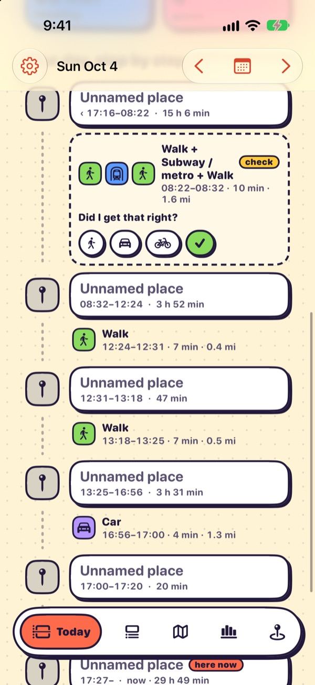
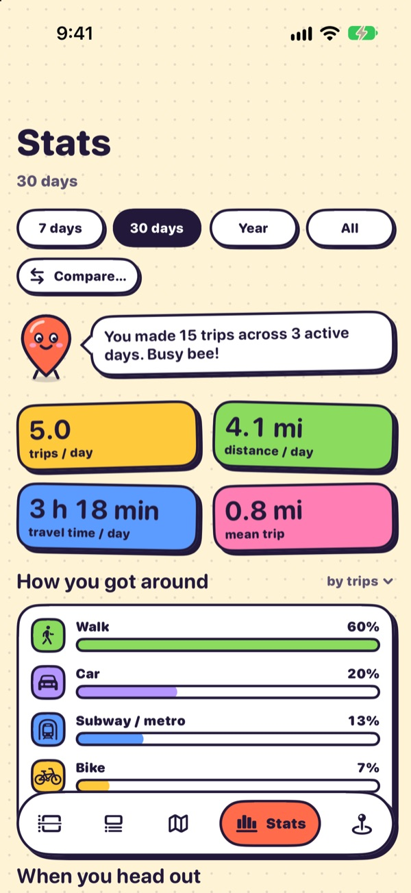
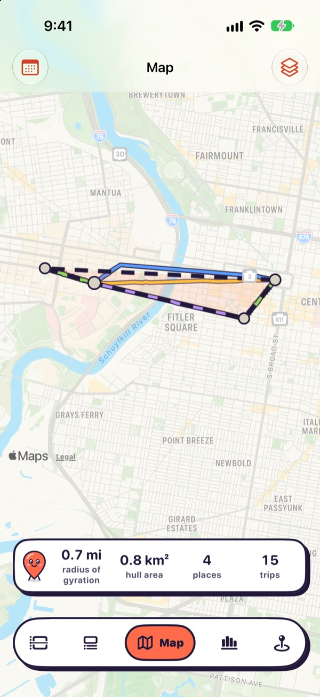
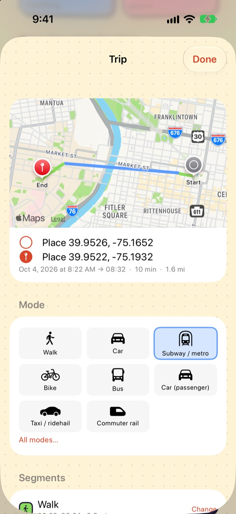

HHT Diary · open mobility tools
Every trip tells a story.
HHT Diary builds open, local-first tools that turn everyday movement into travel data you can understand, correct and keep. Our first product, HHT for iOS, is a travel diary that writes itself.
Free and open source. Installed today by building from source with Xcode; an App Store release is in progress.



Who we are
Travel data that people can see, check and own.
Where we go says a great deal about our lives, yet the tools that record it usually keep the data on someone else's server, and the tools researchers use to study travel are expensive and closed. HHT Diary is an open-source effort to make travel-behaviour data collection more accessible, transparent, affordable and user-controlled, for everyday people and for the researchers who plan our cities.
Flagship product
HHT for iOS
A free iPhone app that records where you go and rebuilds each day into visits, trips and travel modes.
- Trips and visits, automatically. Recording runs in the background; a deterministic engine turns raw GPS into stays, trips, modes and named places, and a tap fixes anything it got wrong.
- Local-first, you stay in control. No account, no server, no analytics SDK. Everything lives in one database on your phone, and you decide what to export and when to erase.
- Data you can actually use. Trips follow household-travel-survey conventions and export to CSV, JSON, GeoJSON and SQLite, ready for Python, R, DuckDB or QGIS.


Explore
One organization, clear places to start.
Products
What you can use today, starting with HHT for iOS.
Browse products →Vision
Why we exist, the principles we hold, and what HHT is not.
Read the vision →Roadmap
Three workstreams, with honest Now, Next and Exploratory labels.
See the roadmap →Docs
Getting started, how inference works, data schemas and the developer API.
Open the docs →Built in the open
Read every line that touches your data.
HHT is Apache 2.0 licensed. The inference rules are documented and tested, accuracy is measured in public (on a small sample so far), and ideas start as GitHub issues.